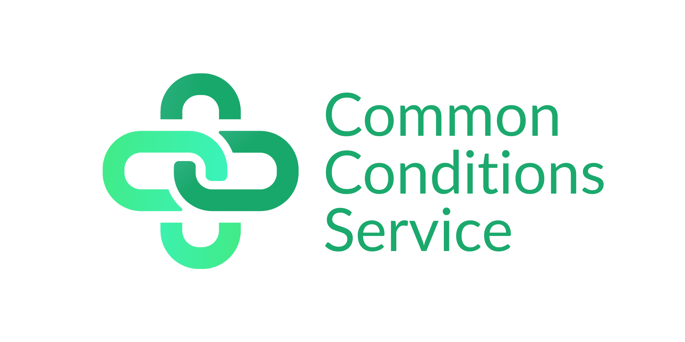

QuickCCS is an app that guides pharmacists through Common Conditions Service consultations step by step, ensuring all relevant clinical questions are covered in the right order. It screens for exclusion criteria, flags referral triggers, and displays the appropriate treatment recommendation based on your answers and the relevant up to date CCS protocol. Where treatment is appropriate, it also generates a formatted prescription ready to copy into Healthmail or save as a PDF. There is no AI involved. The app simply follows the same decision-making pathway you would work through manually, just faster and more consistently.
QuickCCS is a single-page web application. It is one self-contained HTML file running entirely in the browser. There is no server, no database, no backend, and no network calls of any kind. Everything runs locally on your PC, phone, or tablet.
Disclaimer: QuickCCS is a clinical decision support tool only. It does not replace the professional judgement of the prescribing pharmacist. The pharmacist remains solely responsible for all clinical decisions made during a consultation, including verification of recommendations against current HSE CCS protocols and applicable clinical guidelines. The developers of QuickCCS accept no liability for clinical decisions made in reliance on this tool.